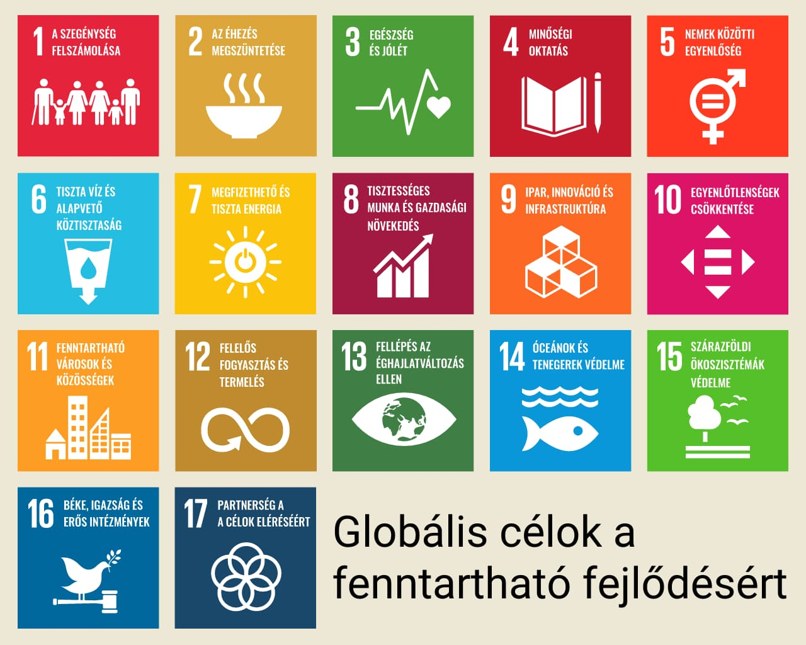
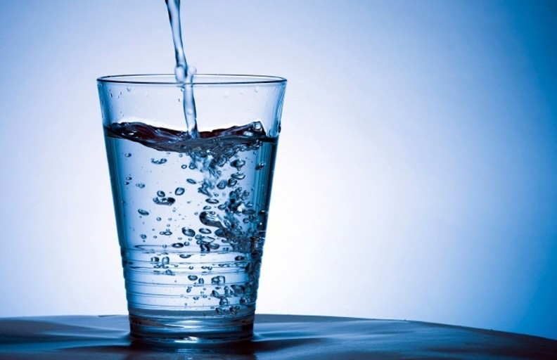

Fogalma
Olyan fejlődési folyamat, ill. szervezési elv, ami „kielégíti a jelen szükségleteit anélkül, hogy csökkentené a jövendő generációk képességét, hogy kielégítsék a saját szükségleteiket”.
A fenntartható fejlődésnek fenn kell tartani a természetes rendszerek, források összességének azon képességeit, amelyeken a természet és a társadalom alapszik.
A másik tényező, amit le kellene küzdenie, a környezet elhasználódása, de ezt úgy kell elérnie, hogy közben ne mondjon le sem a gazdasági fejlődés, sem a társadalmi egyenlőség és igazságosság igényeiről. Forrás

A fenntarthatóság elvi alapja
Életrendünk akkor fenntartható, ha anyagforgalma körkörös, azaz illeszkedik a természet rendjébe.
A fizika egy alapvető állítása szerint folyamatok körfolyamatokká alakíthatóak, ha kívülről elég energiát viszünk be a rendszerbe. Körfolyamattá alakítás során a bevitt energia részben hulladékhővé alakul. Ezért bármilyen gyártási eljárás és az azt követő felhasználás energia szempontjából körfolyamattá zárható, amennyiben van elég energia, és a hulladékhőt le tudjuk adni. Forrás
Erőforrások
Világunk jelenleg jóval több erőforrást használ, mint amennyit a fenntarthatóság (természetes újratermelődés) megengedne.
Ebből következően a jelenlegi gazdasági rendszer csak jelentős többlet-erőforrásokkal (mesterséges eszközökkel) képes működni. Ha ezek az erőforrások kimerülnek, a gazdaság komoly veszélybe kerülhet. Mivel az erőforrás-felhasználás 87%-át fosszilis energiahordozók képviselik, ezek fogyása rejti a legnagyobb kockázatot. A legújabb bizonyítékok alapján a könnyen kitermelhető fosszilis energiahordozókat már kitermeltük. Ezek közül is a legnyilvánvalóbb a kőolaj fogyása. E kérdésben nem is annyira az adott erőforrás, pl. kőolajmező nagysága a mérvadó, hanem sokkal inkább az, hogy meddig érdemes kitermelni az adott mezőt, ezt méri az EROEI mérőszám, tehát pl. azt, hogy egy hordó kőolaj felhasználásával hány hordó kőolaj nyerhető ki. Az adott erőforrások csökkenésére sokak szerint a technológiai fejlődés jelenthet megoldást, ám a növekedés fenntartása zárt rendszerben, mint amilyen a Föld is mindenképpen problémákat okozhat. Ugyanakkor a fosszilis energiaforrások jelentik a legnagyobb környezeti kárt, a CO2 fejlesztés miatt. Forrás
Önfenntartó rendszerek:
- Élővilág
- Piac
- Társadalom

A fenntartható fejlődést szolgáló főbb termékek, fogalmak megújuló energiaforrások:
- bioetanol
- biodiesel
- biomasszabiomassza
- biogáz
- életciklus-értékelés
Hogyan járulhatunk hozzá a fenntartható fejlődéshez?
Az első lépés az, hogy informálódjunk. E felé már meg is tetted az első lépést, de fontos, hogy naprakészen tartsuk tudásunkat, és kövessük figyelemmel a fejleményeket.
Ha elég tájékozottak vagyunk a témában, akkor következhet a második lépés, ami az információ megosztását jelenti. Beszélgessünk kollégáinkkal, családtagjainkkal és barátainkkal az aktuális fejleményekről, hogy minél több emberhez eljuthasson az információ.
Fenntarthatóság az irodában
Napjainkban a cégek számára a - fogyasztók részéről - szinte elvárás, hogy a fenntarthatósági szempontokat is figyelembe vegyék, amire számtalan lehetőség kínálkozik. Az egyik leglátványosabb eredményt azzal lehet elérni, ha felülvizsgáljuk jelenlegi partnereinket, illetve szolgáltatónkat, és ha tehetjük, akkor zöldebb alternatívára váltunk. Legyen szó raktározásról, fuvarozásról vagy olyan alapvető szükségletek kielégítéséről, mint az ivóvíz.
A csapvíz minősége hazánkban - különösen a nagyvárosokban -, a régi csővezetékek miatt kifogásolható. Ha viszont szeretnél minőségi és egészséges vizet nyújtani a munkatársak részére, akkor azt is megteheted a fenntartható módon.
